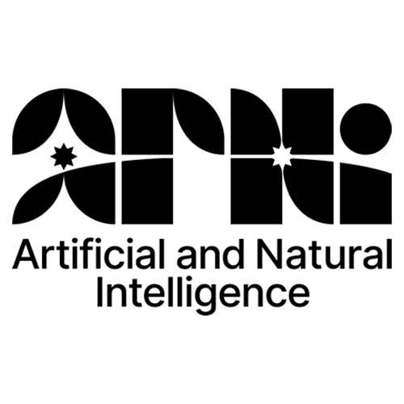
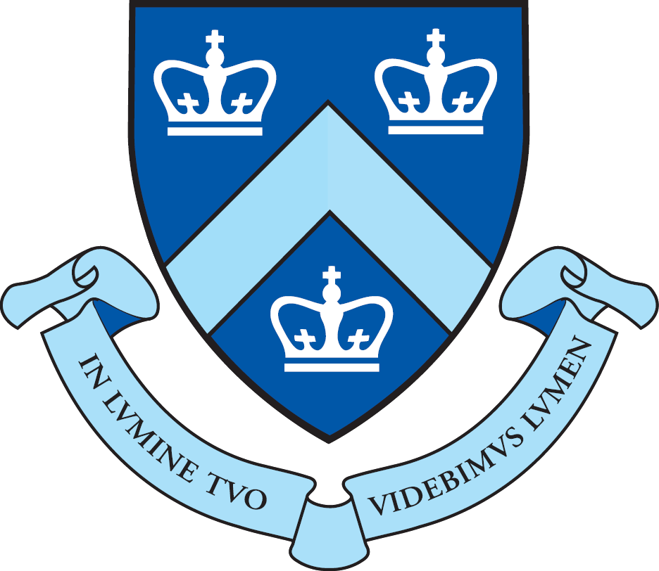
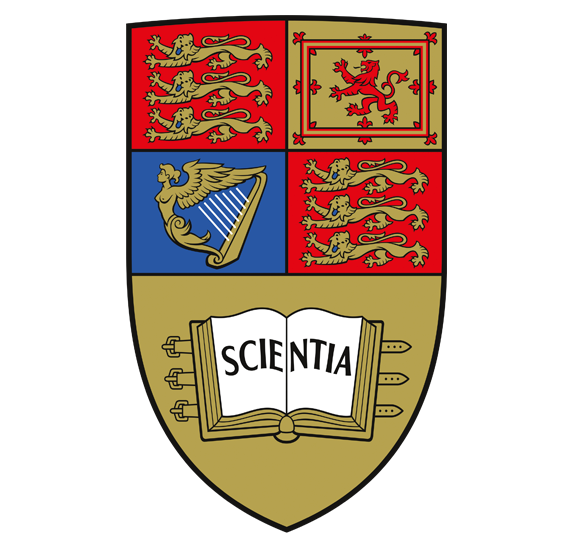
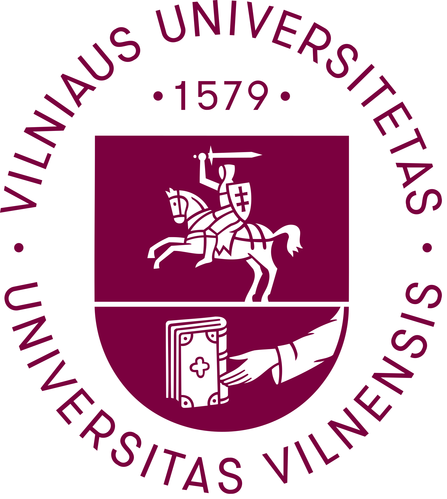

Eivinas Butkus
Home
Background
Publications
Full CV (PDF)
2024 – present

Trainee
NSF AI Institute for Artificial and Natural Intelligence
Co-organizing the working group on multi-resource-cost optimization of neural networks
2021 – present

PhD Psychology
Columbia University
Supervised by Niko Kriegeskorte
2019 – 2021
Research Assistant
Yale University
Ilker Yildirim's Cognitive and Neural Computation Lab
2018 – 2019

MSc Computer Science
Imperial College London
Supervised by Antoine Cully.
Thesis: "Dimensionality Reduction Techniques for Automatic Behavior Descriptors"
2015 – 2018
BA Philosophy
King's College London
Supervised by Patrick Butlin and David Papineau.
Thesis: "Models, Understanding, and Artificial Intelligence"
2014 – 2015

BSc Mathematics
Vilnius University
One year completed